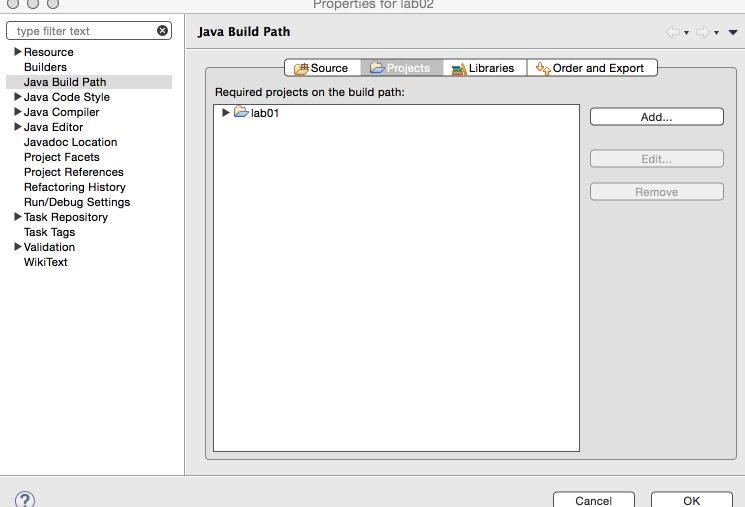
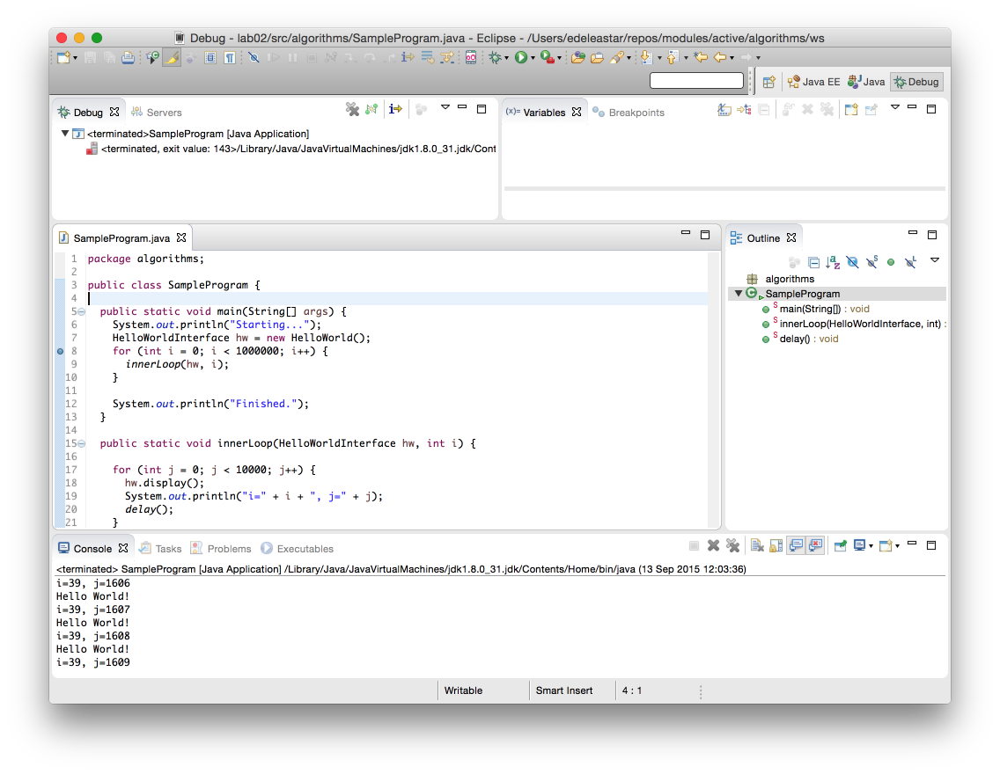
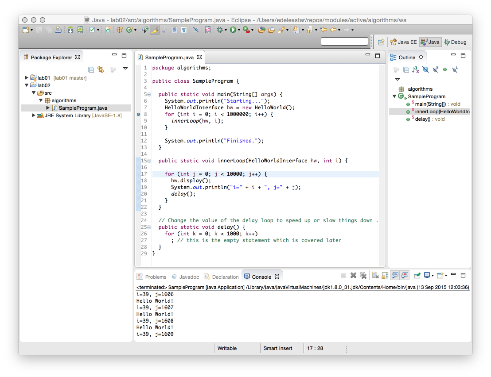
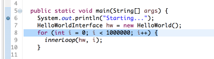
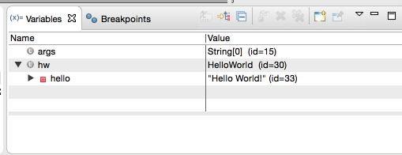
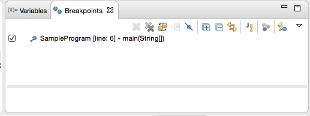
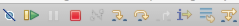
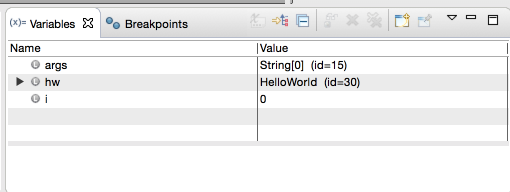

Debugging in Eclipse
- Understand workspaces in Eclipse
- Open the Debug Perspective in Eclipse.
- Suspend, Resume and Terminate a Java Program.
- Set Break Points.
- Step through code.
- View variable values
Sample Program
Create a new project called Lab2.
Create a new package called algorithms in the new project.
Put the following sample program into the algorithms package in Lab2.
package algorithms;
public class SampleProgram {
public static void main(String[] args) {
System.out.println("Starting...");
HelloWorldInterface hw = new HelloWorld();
for (int i = 0; i < 1000000; i++) {
innerLoop(hw, i);
}
System.out.println("Finished.");
}
public static void innerLoop(HelloWorldInterface hw, int i) {
for (int j = 0; j < 10000; j++) {
hw.display();
System.out.println("i=" + i + ", j=" + j);
delay();
}
}
// Change the value of the delay loop to speed up or slow things down .
public static void delay() {
for (int k = 0; k < 1000; k++)
; // this is the empty statement which is covered later
}
}The Sample Program uses the class and interface you created in the previous lab. To include them on your build path, right-click on Lab2 in the Package Explorer and select Build Path -> Configure Build Path.
Select the Project tab and add the previous algorithms project as shown below. Now your code should compile correctly.(you need to have lab 1 complete)

The Debug Perspective
Switch to the debug perspective by clicking on the icon in the top-right corner of the Eclipse window.
Select Debug from the list of perspectives.

Suspending, Resuming and Terminating
Return to the Java perspective and open SampleProgram.java in the program editor
Select Run->Debug as->Java Application
You should see the program printing to the console:

Suspending, Resuming and Terminating
While the program is running, switch to the Debug Perspective. Find the Resume, Suspend and Terminate button in the toolbar.
Click on Suspend (the yellow vertical lines) and Resume (yellow bar and green triangle) to suspend and resume program execution. Observe what happens.
Finally, click the Terminate button(red square) to stop execution.
Break Points
You can use break points to suspend execution at a particular line in your code. Set a break point by double clicking in the grey bar beside the first call to System.out.println as shown below.

Run the program in Debug as before. Execution will automatically suspend just before the breakpoint you have set.
More Break Points
Put another break point somewhere in the innerloop(...) method and click on the Resume button.
You will notice execution now stops at every iteration in the innerloop(...) method. You should also notice the Variables and Break window in the top right corner of the Debug Perspective:

Break Points Window
Use the breakpoint window to disable the second break point in innerloop(..) by unchecking the option.

Now resume the program again. You should now notice this checkpoint is ignored.
Stepping through code
You may want more control over the execution of a program to really understand what’s going on in the code.
Terminate your program if it is still running
Re-activate the breakpoint in the innerloop() method and run the program in Debug mode again. When the program suspends at the first break point, find the following buttons:

Find the Step Over button (using tool tip text) and click it to step though the code on line at a time.
- try this out by stepping over the innerloop() method call.
Find the Step Into button and use it to step through code. Step into will also go “into” any method calls.
- try this out by stepping into the innerloop() method call.
Finally, the Step Return allows you to return from a method call and suspends where the method returns.
- try this out by returning from the innerloop() method
Variables
As before, run the program in debug mode and use Step Over to bring execution to the innerloop(...) method call.
Move the mouse pointer over one of the variables. It’s current value will be shown in a pop-up window

Also, current variable values are shown in the variables window in the top right of the Debug perspective

Step into the innerloop() method and monitor the changes to i and j as you step through the code
Debug Practice
Include this class here into your project:
package algorithms;
import java.util.Scanner;
public class BuggyStringReverse {
public static void main(String[] args) {
Scanner stdin = new Scanner(System.in);
String s;
System.out.println("\n Please enter a String to reverse: ");
s = stdin.next();
stdin.close();
System.out.println("The reverse of \"" + s + "\" is " + reverseString(s));
}
public static String reverseString(String s) {
// initiate vars
String rev = "";
int counter = 0;
for (int i = 0; i < s.length(); i++) {
rev += s.charAt(s.length() - counter);
counter++;
}
return rev;
}
}The program takes a string as input and reverses it (i.e. “banana” should return “ananab”).
However it does not work. Confirm this by running it in Eclipse. Then use the debugger to find the problem and fix it.